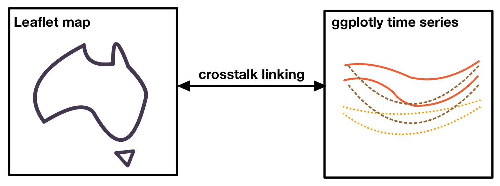
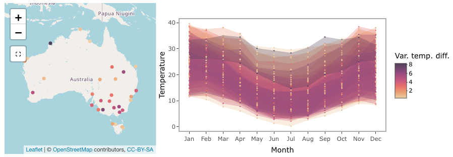
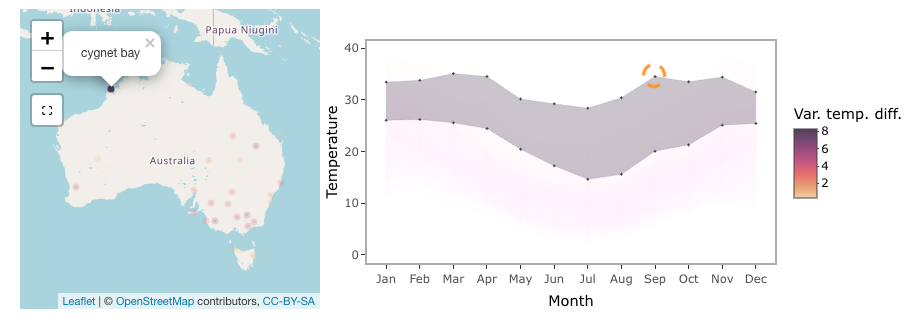

Interactive graphics can be useful when working with spatio-temporal
data since they allow for exploring the data from multiple perspective.
In this vignette, we will demonstrate how to create an interactive
graphic with cubble objects. We will be using
crosstalk::bscols() to create a linked interactive plot of
an Australia map, created with leaflet, and a ggplot plotly time series
plot:

Variation of diurnal temperature range in Australia
Australia has diverse climate conditions with different temperature
patterns across its regions. and different temperature patterns can be
observed. We can compute the average maximum and minimum temperature by
month at 30 locations sampled from the dataset climate_aus.
The diurnal temperature range, the difference between the maximum and
minimum temperature, has different variations throughout the year. We
will use its variance to color the plot. The codes below calculate these
variables:
set.seed(123)
climate_smaller <- climate_aus |> head(n = 30)
(clean <- climate_smaller |>
face_temporal() |>
group_by(month = lubridate::month(date, label = TRUE, abbr = TRUE)) |>
summarise(
tmax = mean(tmax, na.rm = TRUE),
tmin = mean(tmin, na.rm = TRUE),
diff = mean(tmax - tmin, na.rm = TRUE)
) |>
face_spatial() |>
rowwise() |>
mutate(temp_diff_var = var(ts$diff, na.rm = TRUE))
)
#> # cubble: key: id [30], index: month, nested form
#> # spatial: [113.5319, -25.9261, 128.71, -13.7542], Missing CRS!
#> # temporal: month [ord], tmax [dbl], tmin [dbl], diff [dbl]
#> id long lat elev name wmo_id ts temp_diff_var
#> <chr> <dbl> <dbl> <dbl> <chr> <dbl> <list> <dbl>
#> 1 ASN00001006 128. -15.5 3.8 wyndham aero 95214 <gropd_df> 8.65
#> 2 ASN00001007 126. -13.8 6 troughton isla… 94102 <gropd_df> 0.258
#> 3 ASN00001018 126. -16.4 546 mount elizabeth 94211 <gropd_df> 23.4
#> 4 ASN00001019 127. -14.3 23 kalumburu 94100 <gropd_df> 18.7
#> 5 ASN00001020 126. -14.1 51 truscott 95101 <gropd_df> 5.90
#> 6 ASN00001025 126. -15.4 385 doongan 94215 <gropd_df> 16.0
#> 7 ASN00002012 128. -18.2 422 halls creek ai… 94212 <gropd_df> 7.27
#> 8 ASN00002032 128. -17.0 203 warmun 94213 <gropd_df> 3.58
#> 9 ASN00002056 129. -15.8 44 kununurra aero 94216 <gropd_df> 8.65
#> 10 ASN00002064 128. -16.6 164 argyle aerodro… 94217 <gropd_df> 2.81
#> # ℹ 20 more rowsLinking with crosstalk
We create two SharedData objects in crosstalk - one using the nested
cubble and another using the long cubble. We will use the
id as the key and give them the same group name
(group = "cubble"):
nested <- clean %>% SharedData$new(~id, group = "cubble")
long <- clean |>
face_temporal() |>
unfold(temp_diff_var) |>
arrange(temp_diff_var) %>%
SharedData$new(~id, group = "cubble")Creating maps with leaflet
To create a basic leaflet map showing station location, we can use
addTiles() to create an underlying map and
addCircleMarkers() to add points representing the
stations:
leaflet(nested, width = 300, height = 300) |>
addTiles() |>
addCircleMarkers()To apply colors to the stations, we need to map a variable in the
data to a color palette. In this example, we map the numerical variable
temp_diff_var to a sequential color palette, Rocket, with
some color fine-tuning using colorNumeric(). We also add a
popup to display the station names using the popup argument
in addCircleMarkers():
domain <- clean$temp_diff_var
pal <- colorNumeric(
colorspace::sequential_hcl(
"Rocket", n = 7, cmax = 90, rev = TRUE, c2 = 40, l2= 85, c1 = 20, l1 = 30),
domain = domain)
map <- leaflet(nested, width = 300, height = 300) |>
addTiles() |>
addCircleMarkers(color = ~pal(domain), group = "a", radius = 0.1,
popup = ~name, fillOpacity = 1, opacity = 1)Creating time series plot with plotly
The time series plot allows us to visualize the temperature band of each station, providing insights into the diurnal temperature range by month. We can use geom_ribbon() to create a temperature band that displays both the maximum and minimum temperature:
ts_static <- long %>%
ggplot(aes(x = month, group = id,
fill = temp_diff_var, color = temp_diff_var
)) +
geom_ribbon(aes(ymin = tmin, ymax = tmax), size = 0.1, alpha = 0.3) +
# geom_point(aes(y = tmax), size = 0.1) +
# geom_point(aes(y = tmin), size = 0.1) +
colorspace::scale_fill_continuous_sequential(
"Rocket", n_interp = 7, cmax = 90, rev = TRUE,
c2 = 40, l2= 85, c1 = 20, l1 = 30, name = "Var. temp. diff.") +
colorspace::scale_colour_continuous_sequential(
"Rocket", n_interp = 7, cmax = 90, rev = TRUE,
c2 = 40, l2= 85, c1 = 20, l1 = 30, name = "Var. temp. diff.") +
labs(x = "Month", y = "Temperature") +
theme_bw() +
theme(
panel.grid.major = element_blank(),
legend.position = "bottom"
)The static ggplot object can be converted into a plotly object using
ggplotly() and plotly::highlight() enable the
box or lasso selection (on = "plotly_selected"):
ts_interactive <- ggplotly(ts_static, width = 600, height = 300) %>%
highlight(on = "plotly_selected", opacityDim = 0.012)Assembling into a linked plot
crosstalk::bscols() combines multiple interactive
graphics in columns:
bscols(map, ts_interactive, widths = c(4, 6))Below is a screenshot of the full graphics:

Making selection to see the linking
The selection in the linked plot works in both directions. In the screenshot below, a lasso selection is made on the time series, linking to the Cygnet Bay on the northwest coastline of Australia. In July, this area shows a larger temperature range compared to the summer period (December - February).

Selection on the leaflet map can be made using the selection tool below the zoom-in/out bottom on the map. In the screenshot, two selections are made - one on northern Australia and the other in inland Queensland. Northern Australia has a narrow temperature range constantly 20 degrees throughout the year, while inland Queensland temperature has a much larger temperature range with a noticeable difference between the summer and winter periods.


Now it is your time to view the tooltip on the map and use the selection to explore weather patterns in Australia!